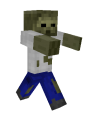
 /-
/-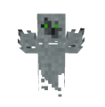
/-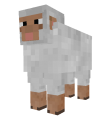
/-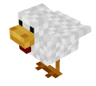
/-Feather(s)
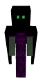
/-A few simple creatures in Stonecraft, not all are bad.
| Mob | Description | Health/Armor/Damage | Drops |
|---|---|---|---|
| Zombie 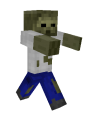 |
Zombies can spawn at every time of day in the world as long there is not too much light. So you will find some in caves, dark forests and of cause a lot at night. If they notice you they will attack. Zombies have 20 HP (like players) and drop sometimes rotten flesh on death. On day Zombies die because of the sunlight. | 20/-/- |
Rotten flesh |
| Ghost 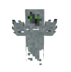 |
Ghosts only spawn at night-time and they don’t spawn underground. They are flying in the world and attack you aswell if they notice you. Ghosts have 15 HP and don’t drop any items atm (might be changed in future).They can’t harm you in your house. If it becomes day Ghosts will take damage by the sunlight, so they will die after a while. | 15/-/- |
- |
| Sheep 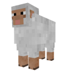 |
Sheep spawn only at day-time and are friendly mobs. They remain around 5 minutes in the world unless they are tamed with 5 wheat (rightclick). There are four different wool colors: white, grey, brown and black. If there is grass (dirt with grass) they eat the grass and make new wool that way. Sheep have 8 HP and drop 1-2 wool when punched or sheared with shears. They need to eat grass until they can give wool again. | 8/-/- |
1-2 wool |
| Chicken 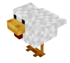 |
Chicken are friendly and spawn only at day-time too. They drop randomly eggs and remain 5 minutes. Currently you can’t tame or breed them. They drop chicken meat and feather(s) on death. Eggs can be thrown to spawn (rarely) new chicken, or cooked in furnace to gain fried eggs, which are eatable. | -/-/- |
Chicken meat Feather(s) |
| Oerrki 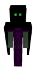 |
Oerrki spawn only at night on stone or dirt like blocks. They attack players and make more damage than Zombies or Ghosts. Daylight can’t harm them. | -/-/- |
- |
Not So Simple Mobs are more complex mobs in Stonecraft, for the purpose of increasing the difficulty of playing. There are more than 50 different mobs. They are divided in groups, each one who lives in a different biome.
They all drop life energies. With life energies you can craft tools and special powerful weapons to defend yourself from the monsters.
| Mob | Description | Health/Armor/Damage | Drops |
|---|---|---|---|
| Black Widow 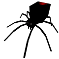 |
A black widow is a hostile medium sized spider with a big abdomen. They attack with small but powerful chelicerae. | 10/-/1 1/2 |
Life Energy Spider Leg Web |
| Stone Bloco 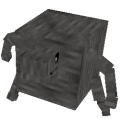 |
A Bloco is a hostile mob made of stone with a little head, short arms and legs. Bloco Is a little clumsy in walking and he chases his enemies rolling like a ball, a cubic ball obviously! He is a true Rolling Stones fan. |
7 1/2/4/1 |
Life Energy Stone |
| Crab 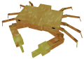 |
Crab is a hostile mob that lives on the beach and they don’t float in water, they prefer walking on the sand pinching their enemies with their powerful chelas. Crabs have two possible colors of their carapace, red and light orange. | 17/-/1 1/2 |
Life Energy Surimi Crab Chela |
| Crocodile 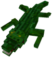 |
A Crocodile is a hostile mob. | 10/1/1 1/2 |
Life Energy Crocodile Tail |
| Daddy Long Legs 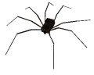 |
A Daddy Long Legs is a spiderlike hostile mob with a small body and obviously, long legs! | 9 1/2/-/1 1/2 |
Life Energy Spider Leg |
| Dolidrosaurus 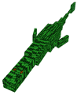 |
A Dolidrosaurus is an aquatic reptile hostile mob with a long tail and a fin at the end. They’re fully adapted to living in water and they have two others fins on the side which allow them to swim faster and more precisely. Dolidrosaurus derives from greek, Dolicolos means long, Hydor water and Sauros lizard. Dolidrosauruses have five possible variations of their skin: Dark green, green, light green, blue-green and blue-pink. | 13/2/2 |
Life Energy |
| Duck 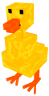 |
A Duck is cute but evil hostile mob. Walks around the plains with nothing better to do than pecking the players foot. It Is quite small and can survive Stonecraft cruel world only with the help of her big brothers and sisters that attack the bad players who wants to eat their delicious duck legs. | 5/-/1/2 |
Life Energy Duck Legs Duck Beak |
| Echidna 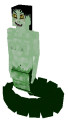 |
An Echidna is a beautiful human hostile mob. It’s skin is pale, sick-green and they have black hair. They’re half naked but you probably won’t care, the one who looses himself in thoose evil, but beautiful, eyes is dead. When you are to close she will slash you with her tail. She emits poison to blocks nearby which does not go away, it causes half heart of damage each game tick and you can drown in it like you would in water. | 45/4/5 |
Life Energy Snake Scute |
| Enderduck 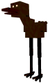 |
An Enderduck is tall and very dark hostile mob that spawns at night and hunts poor miners chasing them with high speed and brilliant eyes that allow them to see in the darker night. | 10/-/1 1/2 |
Life Energy Duck Legs Duck Beak |
| Felucco 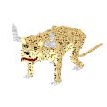 |
The Felucco is one of the most fierce carnivores of nssm. It is very fast and attacks anyone with its mighty horns. His name derives form italian: “fel” stands for “felino”, feline, because of its similarity with leopards. “Ucc” stands for “mucca”, cow, because of his peculiar horns and “o” is the desinence for male in italian. With the fur it is possible to craft a strong armor, but not so durable. Felucco steaks are very nutritious after been cooked. Felucco horns are good raw materials to craft weapons and tools, it is possible to craft a hoe, a knife and a spear. |
16/3/2 1/2 |
Life Energy Felucco Fur Felucco Steak Felucco Horn |
| Giant Sandworm 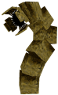 |
A Giant Sandworm is a huge hostile mob that likes to stay in one place and damages players when they get within a 7 block range. | 65/4/4 |
Life Energy Worm Flesh Black Sand |
| Icelamander 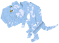 |
The Icelamander is the boss of ice biomes. Nearly nothing could defeat this dangerous mob. Taller than a normal Sam, the Icelamanders have even more frightening jaws than Snow Biters! They have a long tail that helps them to keep the balance on their two legs. The Icelamanders are so cold that they frost everything while walking, not only water! Their frosting power is so strong that they can freeze you in an ice column even from a great distance! Not the simple default ice, but the Coldest Ice, so cold that can freeze the souls of the unlucky creatues trapped in it. Icelamander eats their with their horrible fangs that can damage really bad their preys. You have now certainly understood that Icelamanders are really really dangerous. |
230/6/6 |
Life Energy Ice Tooth Little Ice Tooth Frosted Amphibian Heart Amphibian Ribs |
| Icesnake 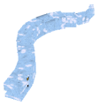 |
An Icesnake is an amphibian that live in ice plains and mountains. Long ago its body has been adapted to cold biomes using ice and cold in order to preserve the water content in cells. In fact the heat produced by the frosting of ice in the environment allows the Icesnake and the others ice amphibians as Snow Biters, Icelamanders and Icelizards to keep in the liquid form their body fluids. Icesnakes aren’t very big or evil but they attack enemies with their fangs very rapidly. |
13 1/2/3/2 |
Life Energy Ice Tooth Little Ice Tooth Frosted Amphibian Heart Amphibian Ribs |
| Kraken 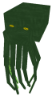 |
A Kraken is the king of the sea hostile gigantic octopus mob with long tentacles. There attack with tentacles is devastating but there dimensions doesn’t allow them to go fast. Females are red-rose as Octpuses, on the other side the males are dark green. Kraken can produce ink in the water which make seeing in water even more difficult. | 75/3/4 |
Life Energy Tentacle Tentacle Curly |
| Larva 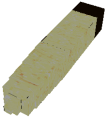 |
A Larva is a hostile mob. It is the first stadium of Mantis and Mantis Beasts development. Their body is white and the head is brown. After around half a minute they become Mantis or Mantis Beasts! So be careful and slay all of them before it is too late. | 5/-/1/2 |
Life Energy |
| Lava Titan 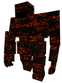 |
A Lava Titan is a hostile mob that turns nearby blocks into lava and has two attack styles. - Lava titan hits the ground with his fist, kneels and summons lava blocks diagonaly around players. - Lava titan marches straight toward you rushing through blocks and destroying every block he touches. |
40/6/3 1/2 |
Life Energy Lava Bucket Lava Titan Eye |
| Manticore 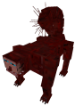 |
A Manticore is a strong, fast hostile mob. It attacks either with projectiles from a far or with the scorpion sting on it’s tail when you’re too near. Appearence With face like a man’s, a skin red as cinnabar, and is as large as a lion. It has three rows of teeth, ears and light-blue eyes like those of a man; its tail is like that of a land scorpion, containing a sting more than a cubit long at the end. It has other stings on each side of its tail. |
12 1/2/-/2 |
Life Energy Manticore Spine |
| Mantis 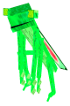 |
A Mantis is a tall and humanlike hostile mob that has two possible colors and attacks with two powerful kung fu moves with its 4 arms! It walks on two legs looking for fresh meat: you! | 7 1/2/-/1 |
Life Energy Mantis Claw |
| Mantis Beast 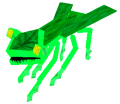 |
A Mantis Beast is a hostile mob that is Very similar to their relatives that walk on only two legs, Mantis Beasts are faster thanks to their 6 claws used in running and their position is more “beastly”! | 10/-/1 1/2 |
Life Energy Mantis Claw |
| Masticone 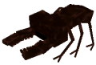 |
A Masticone is a hostile mob that alone isn’t a real danger, but when you kill one of them two others come to venge their friend. Kill as many as you can then run as fast as you can! | 7 1/2/4/2 1/2 |
Life Energy Masticone Fang Masticone Skull Fragments |
| Mese Dragon 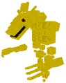 |
A Mese Dragon is a massive hostile boss mob with midas touch that turns nearby blocks into mese blocks and has meele and firebreath attack. Mese dragon is not damaged by sunlight, water or lava. | 166 1/2/4/8 |
Energy Globe Rainbow Staff |
| Night Master |
A Night Master is a hostile mob that is a special kind of Moonheron that has three heads. | 15/3/4 |
Life Energy Heron Leg Night Feather |
| Octopus 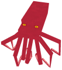 |
An octopus is a hostile mob that is weaker brother of Kraken, they’re not able to produce ink and they are all red-rose. | 11/-/1 1/2 |
Life Energy Tentacle |
| Phoenix 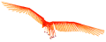 |
A Phoenix is a hostile mob made of fire and energy. Nobody, unless the sun, is brighter than this beatiful bird in the sky. | 30/4/1 |
Life Energy Sun Feather Phoenix Tear Phoenix Nuggets |
| Pumpking 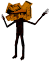 |
A Pumpking is a hostile mob king of the pumbooms it is tall creepy creature with a humanlike black thin bodies covered with the blood of their victims, their head is very similar to a Pumpboom and their body to Signosigno. On their death they have a little explosive surprise for the unlucky warrior able enough to defeat them… | 50/5/4 1/2 |
Life Energy Cursed Pumpkin Seed |
| Scrausics 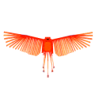 |
A scrausics is a hostile mob. | 15/2/2 |
Life Energy Raw Scrausics Wing |
| Snowbiter 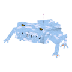 |
A Snow Biter is a hostile mob. | 15/2/2 |
Life Energy Frosted Amphibian Heart Amphibian Ribs Little Ice Tooth |
| Spiderduck 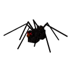 |
Spiderducks have evolved from Enderducks to become more similar to the spiders. They have a dark skin and 8 legs, but the body is the one of a duck. Even if they are not bosses they are extremely dangerous! In fact if you don’t know what to expect from a spiderduck you can easily fall in its web and become a tasteful snack! Spiderducks spawn only at night and because of their dark color they are able to easily blend with the environment. If a spiderduck sees you it starts shooting at you web projectiles. When they hit the target a sticky web covers the soil trapping the victims. And if you have been trapped then expect the spiderduck to come at you and to eat you! |
24-35/2/6 |
Duck legs Life Energy Web Duck beak |
| Stone Eater 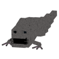 |
A Stone Eater is a hostile mob that is imune to any sword weapon. When under attack he bites back while eating stone that is around. | 14/6/2 1/2 |
Life Energy Stoneater Mandible Stone |
| Swimming Duck 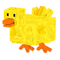 |
A Swimming Duck is a hostile mob. | 12 1/2/2/1 1/2 |
Life Energy Duck Legs Duck Beak Duck Feather |
| Tarantula 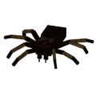 |
A Tarantula is a hostile mob that can either bite or slow down your movement trapping you inside a cocon. After killing it Tarantula Propower appears. | 25/4/4 |
Super Silk Gland |
| Mordain 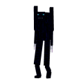 |
A Mordain is a hostile mob that likes teleporting. | 16/2/3 |
Life Energy Slothful Soul Fragment |
| Morde 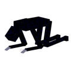 |
A Morde is a hostile mob that has an ability to heal himself. | 23 1/2/4/3 |
Life Energy Proud Soul Fragment |
| Morgre 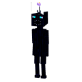 |
A Morgre is a hostile mob that likes to explode. | 17/4/1/2 |
Life Energy Greedy Soul Fragment |
| Morgut 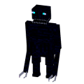 |
Dont let it get to close to you or else it will steal your precious food. You can get your food back by slaying Morgut. With the Gluttonous soul fragment it is possible to craft a strong weapon Sword of Gluttony and Food Bomb |
18/3/2 |
Life Energy Gluttonous soul fragment |
| Morlu 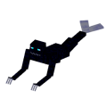 |
Dont let it get to close to you or else it will steal your precious equipped armor. You can get your armor back by slaying Morlu. With the Lustful Soul Fragment it is possible to craft strong Morlu armor and Cage Bomb |
28/5/4 |
Life Energy Wrathful Soul Fragment |
| Morvy 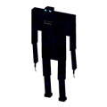 |
A Morvy is a hostile mob that likes summoning. | 19 1/2/4/2 |
Life Energy Envious Soul Fragment |
| Morwa 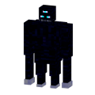 |
A Morwa is a hostile mob that can either range you from afar or smash you when your close enough. | 28/5/4 |
Life Energy Wrathful Soul Fragment |